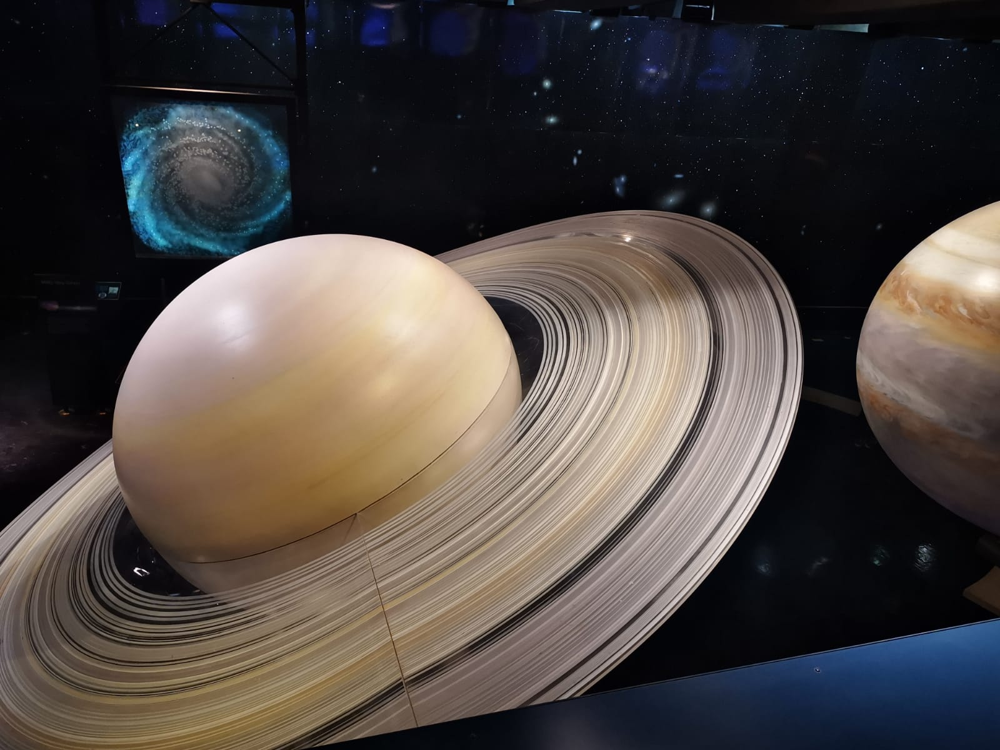

Observatorio Griffith 🔭
Astronomía
🙂 Te platico sobre el observatorio de Griffith. El Observatorio Griffith, se encuentra ubicado en la zona sur del Monte Hollywood, te dará una vista panorámica espectacular de la ciudad.
Fue inaugurado el 14 de mayo de 1935 tras casi 2 años de construcción. Fue financiado por Griffith J. Griffith, quien ya había donado el terreno a la ciudad unos años antes. Su objetivo, hacer un observatorio accesible al público en general, en lugar de estar reservado a los científicos.
El observatorio fue utilizado durante la Segunda Guerra Mundial para adiestrar a los pilotos con la navegación astronómica, y durante los años 60 fue el lugar elegido para entrenar a los astronautas del programa Apolo.
Además de contar con diversos telescopios, el Observatorio Griffith cuenta con un planetario y diversas exposiciones, entre las que queremos destacar una bobina de Tesla se enciende cada hora para mostrar lo que consiguió uno de los principales genios del siglo XIX.
Como curiosidad para los cinéfilos, el observatorio también ha aparecido en decenas de películas y series de televisión, algunos ejemplos son Rebelde sin Causa (1955), The Terminator (1984) o Transformers (2007).
Telescopios
Como no podía ser de otro modo, el Observatorio Griffith cuenta con un gigantesco telescopio desde el que es posible contemplar las estrellas y los planetas de cerca (después de esperar un buen rato de cola, eso sí). Por las noches, también colocan telescopios más pequeños en el exterior del edificio.

@turismocultural El Observatorio Griffith, es una de las atracciones culturales más importantes de ##Los Ángeles ##california ##astronomia
♬ Countdown - TikTok